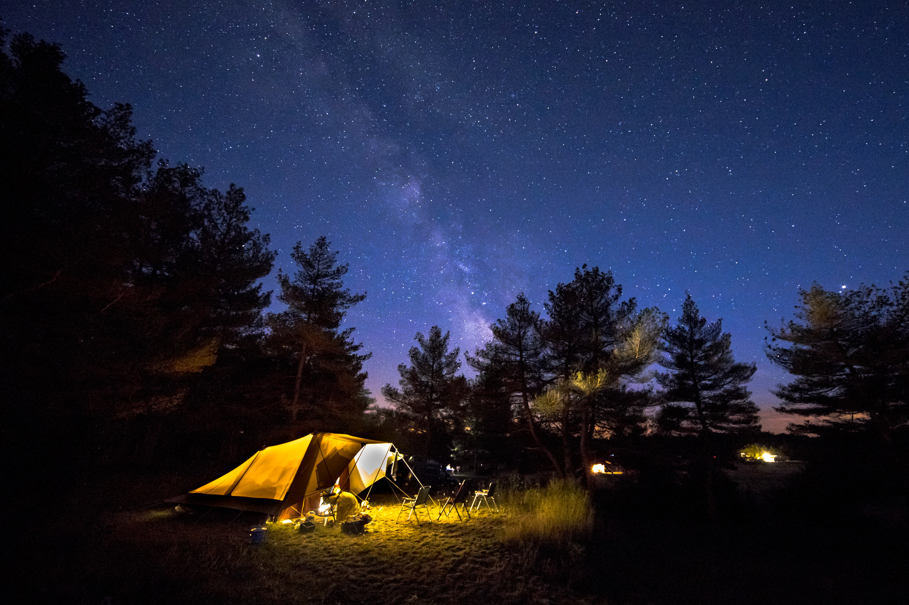
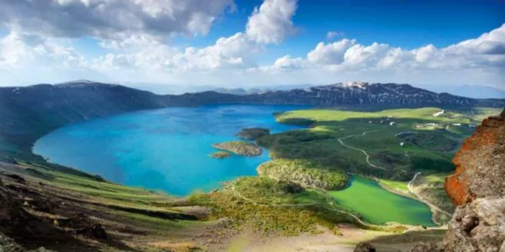

Soğuksu Milli Parkı, İç Anadolu Bölgesi’ndeki en etkileyici kamp alanlarından biri konumunda bulunuyor. “Bozkırdaki Orman” olarak anılan Soğuksu Milli Parkı,çam ağaçları ile döşenmiş ormanlık bir arazi. Ankara’ya oldukça yakın olan bu alanın yüz ölçümü 1.187 hektar. Çadır kurmak ve kamp yapmak açısından müthiş bir araziye sahip olan Soğuksu Milli Parkı, korumaya alınmış bir bölge. Farklı endemik bitki türlerinin yetiştiği Soğuksu Milli Parkı’nda nesli tehlikede olan kara akbaba ve bazı kartal türleri de yaşıyor.
Aladağlar; Kayseri, Adana ve Niğde illeri arasında yer alıyor. “Türkiye’nin Alpleri” olarak anılan bölge, Orta Anadolu’nun zirvesi konumunda ve birçok dağcı ile kamp tutkunu açısından özel bir yer. 1995 yılında koruma altına alınan bölge, “milli park” unvanına sahip. Yaban hayatına ilgi duyan gezginler açısından hayli ilham verici bir yer olan Aladağlar; nefes kesen manzaraları, derin vadileri, heyecan veren zirveleri ve kalabalıktan çok uzak kamp alanları ile maceraperest ruhlara göre. Özellikle Demirkazık Köyü’ne 10 dakikalık yürüyüş mesafesinde olan Cimbar Kanyonu’nda eşsiz kamp yerleri bulunuyor, aklınızda olsun!
Ihlara Vadisi, oluşumu binlerce yıl sürmüş gizemli bir güzellik. 14 kilometre uzunluğunda ve ortalama 150 metre derinliğinde olan bu alan, Melendiz Çayı’nın bölgeyi yarması sayesinde oluşmuş. Kapadokya Bölgesi’ndeki görkemli arazilerden biri olan Ihlara Vadisi’ndeki yaşam da çok uzun zaman önceye dayanıyor. Ortasından Melendiz Çayı geçen bu özel bölge, doğal güzellikleri ile olduğu kadar tarihi ve kültürel değerleri bakımından da oldukça önemli. Buradaki kayalara oyulan freskli kiliseler günümüze kadar ulaşmayı başarmış. Oldukça geniş bir araziye yayılan vadinin etrafı bağlar, bahçelerle kaplı. Dolayısıyla Ihlara Vadisi, kamp yapmak için hayli uygun bir bölge. Özellikle vadinin civarındaki Belisırma ve Selime köyleri de huzur arayan gezginler için çok çekici.

Gödet Vadisi, Karaman’ın Güldere Köyü sınırları içerisinde yer alıyor. “Karaman’ın Grand Kanyonu” olarak anılan bölge, tarihi kalıntıları ve eşsiz doğası ile doğa tutkunlarının vazgeçemediği yerlerden. Geçmişi oldukça eskiye dayanan Gödet Vadisi, kamp yapmak için çok uygun, saklı bir cennet konumunda. İçerisindeki deresiyle, patika yollarıyla ve el değmemiş doğasıyla kalabalıktan uzakta kafanızı dinleyebileceğiniz ve kendinizle baş başa kalabileceğiniz bir yer burası.
Kayseri kamp alanları arasında bulunan Kapuzbaşı Şelaleleri Aladağ Milli Parkı sınırları içerisindedir. Aktığı yerin rakımı 700 metredir ve şelalelerden biri Türkiye’nin en yüksek, dünyanın en yüksek ikinci şelalesidir. Aladağ’ın zirvesinde bulunan kar ve buzullardan beslenmektedir. 5 tanesi büyük 2 tanesi küçük yanyana dökülen Kapuzbaşı Şelaleleri muhteşem bir görüntü oluşturmaktadır. Her yıl yerli ve yabancı binlerce gezgin Kapuzbaşı Şelaleleri’ne kamp yapmak için geliyor.
Çankırı ili, Yapraklı ilçe sınırında bulunan Büyük Yayla, 1600-1700 metre rakımlı yükseklikte harika bir görüntüye sahiptir .Burası sarıçam, karaçam, köknar ve ardıç ağaçları ve zengin bir orman altı bitki örtüsü ile kaplıdır. Yaylada, elektrik, asfalt yol ve suyu bulunmaktadır. Burada günübirlik gezilip eğlenebildiği gibi kamp da kurulabilir. Mükemmel havası, suyu ve yeşilliği ile göz kamaştırmaktadır.
Sivas kent merkezine 147, Gürün ilçe merkezine 10 kilometre mesafedeki Gökpınar Gölü, adeta doğal akvaryumu andırıyor. Dipten kaynaklarla beslenen ve derinliği 15 metreyi bulan göl, yerli ve yabancı turistlerin ilgisini çekiyor. Su altı sporlarıyla uğraşanlar tarafından dalış için tercih edilen gölde, zaman zaman dalış eğitimleri de veriliyor. Balık adamların vazgeçilmezleri arasında yer alan Gökpınar Gölü, bazen su altı kameralarıyla da kaydediliyor.

Nevşehir’de bulunan Kapadokya bir çok turistin uğrak noktasıdır. Fakat kampı konusunda pek de adı geçmeyen bir yerdir. Ama Kapadokya kamp için çok uygun ve her türlü imkanın, güzelliğin olduğu bir yerdir, bu yüzden kamp severlerin mutlaka gitmesi ve deneyimlemesi gereken yerlenden bir tanesidir.
İki ilçenin sınırları içerisinde kalan Ağrı Balık Gölü denizden 2241 m yüksekte olup Türkiye’nin en yüksek rakımlı göllerinden biridir. En derin yeri 37 m’dir ve bir lav seti gölüdür. Göl, içme suyu ve kullanma suyu koruma sahası statüsünde olup yakınındaki yerleşim birimleri için içme suyu sağlamaktadır. Çevresindeki dağlardan gelen küçük dereler, kıyısındaki pınarlar ve yer altı sularıyla beslendiği için akış durumu ve sürekliliği ile ilgili veriler tespit edilememiştir. Yakın çevresinde tarım alanları ve otlaklar bulunur. Türkiye’nin önemli kuş alanlarından biridir. Gölün üzerindeki 0.15 hektar alana sahip bir adada kuluçkaya yatan kadife ördek popülasyonu ile önemli bir kuş alanı statüsü kazanmıştır. Bölgedeki asıl ünü, yetiştirdiği kırmızı benekli alabalıktan kaynaklanır. Göl çevresinde yaşayan başlıca hayvan türleri kartal, şahin, keklik, yabani tavşan, tilki, kurt, yaban ördeği, martı, bıldırcın ve çulluktur.
Bitlis’in Tatvan ilçesinde 2 bin 800 rakımdaki dünyanın ikinci, Türkiye’nin ise en büyük krater gölü olan Nemrut Krater Gölü ve Kamp Alanı, doğal güzelliklerinin yanı sıra çeşitli kuş türlerine de ev sahipli yapıyor. Ayrıca, göllerin çevresinde endemik türlerin olduğu zengin bir floranın olması, buz mağaraları ve buhar bacası bu yeri doğa tutkunları için bir cennet haline getiriyor. Nemrut Kraterinde, sıcak ve soğuk göllerinin bir arada bulunması ziyaretçilerde şaşkınlıkla birlikte hayranlık da uyandırıyor.
Hazar Gölü, Kendine has plajları olan ve su sporları ile balık avcılığı da yapılan bir göldür. Ayrıca, Günün her saatinde değişik görünüm kazanarak mavi ve yeşilin her tonunu gösterir. Suyu berrak, sodalı ve tuzsuzdur. Ayrıca, konumu itibariyle, Şehir gürültüsü ve kirlilikten uzak, Temiz ve Mistik havası ile günü birlik ziyaretçilerin de yoğun ilgisini çekmektedir. Göl Tabiat Parkı, Ücretlidir içerisinde 21 adet orman köşkü, bir adet kır lokantası, idare bina, wc, çocuk oyun alanı, spor tesisleri, piknik alanı, plaj, seyir alanları, Çadır Kamp ve Karavan Kamp alanı bulunmaktadır. Park Hafta sonu tatili için sizleri bekliyor, Keyifli tatiller.
Van gölü sahilinin hemen her alanı kampçılar için uygun. Karavan ve çadır kampı yapmak isteyenler uygun yerleri tercih ederek Van gölü manzaralı kampına başlayabiliyor. Bununla birlikte kalabalıkta uzak olmak için daha sakin bölgeler tercih ediliyor. Temiz havası, bol oksijeni ve eşsiz manzarasıyla özellikle gündoğumu ve günbatımını sahilden kamp yaparak izlemek insana büyük keyif veriyor. Yine kamp esnasında Van gölünde yapılan teknecilik faaliyetlerine katılarak bölgeyi keşfetmek de mümkün. Havasıyla adeta Akdeniz veya Ege sahillerini andıran Van gölü sahilinde ayrıca gölden tutulan balıkların tadına bakmakta oldukça keyifli oluyor.
Tortum şelalesi ve kamp alanı yıl boyunca birçok ziyaretçiyi ağırlıyor. Bu çerçevede oldukça temiz ve görkemli bir doğaya sahip olan Tortum gölü ve şelalesi etrafında piknik yapılabiliyor ve yürüyüş rotaları da bulunuyor. Kamp yapmak isteyenler için de oldukça uygun yerler mevcut. Doğanın içinde şelaleden akan suyun coşkun sesini dinleyerek unutulmaz bir kamp yapma imkânı sunan Tortum şelalesi ve kamp alanı doğa fotoğrafçılarının da ilgisini çekiyor. Suyun 48 metreden akışını ve doğanın sesini dinlemek isteyenler şelalenin yakınına kadar yapılan merdivenlerle bölgeye inerek bu muhteşem manzarayı izleme fırsatı buluyorlar. Hem göl etrafında hem de gürül gürül akan şelale etrafında çadır ve karavan kampı için uygun alanlar mevcut.

900 metre uzunluğundaki tünel şeklindeki mağara bir efsaneye göre Büyük İskender’in doğu seferi esnasında askerlerini burada konaklattığı söylenir. Mağara çevresi bakımsız ve biraz çöp birikintisinden oluşsa da etrafı yemyeşil ağaçlardan oluşuyor. Kendi başına bırakılmış bir yer olması burayı kamp atacaklar için biraz riskli kılabilir. Hafta sonları buraya yakın oturan insanlar çoğunlukla piknik için burayı tercih ediyorlar. Etrafta herhangi bir işletme türü yer bulunmuyor. Bu nedenle kamp atacaklar henüz gelmeden ihtiyaçlarını karşılamaları gerekiyor.